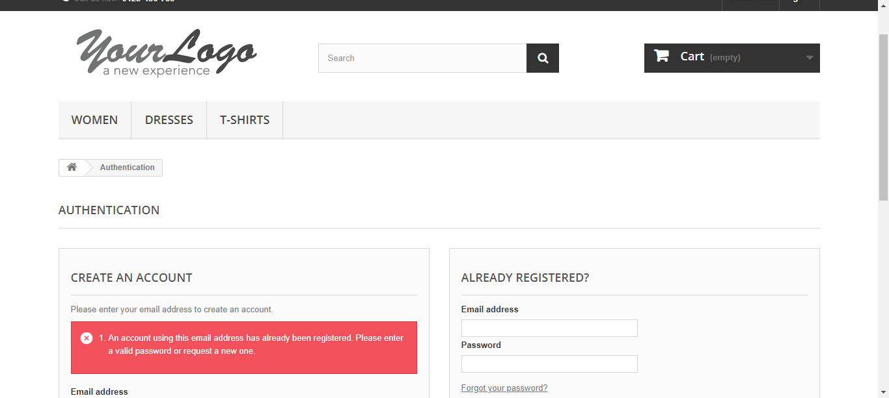
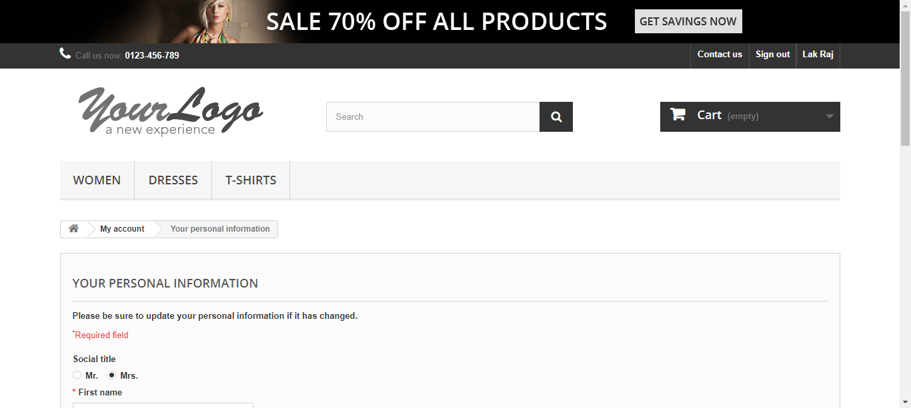

Report generated on 28-Sep-2021 at 18:38:03 by pytest-html v3.1.1
| JAVA_HOME | C:\Program Files\Java\jdk-14.0.2\ |
| Packages | {"pluggy": "1.0.0", "py": "1.10.0", "pytest": "6.2.5"} |
| Platform | Windows-10-10.0.19043-SP0 |
| Plugins | {"html": "3.1.1", "metadata": "1.11.0"} |
| Python | 3.9.7 |
3 tests ran in 81.10 seconds.
(Un)check the boxes to filter the results.
1 passed, 0 skipped, 2 failed, 0 errors, 0 expected failures, 0 unexpected passes| Result | Test | Duration | Links |
|---|---|---|---|
| No results found. Try to check the filters | |||
| Failed | Accountcreationandvalidation_test.py::TestEcommercesiteoperations::test_accountcreationandvalidation[getdata0] | 26.30 | |
|
 self = <Tests.Accountcreationandvalidation_test.TestEcommercesiteoperations object at 0x000001B0D39F3B20> getdata = {'AI': 'askjfhkjasf', 'Addrs': 'asdfgh', 'City': 'htfd', 'Email': 'dsbzza@mail.com', ...} def test_accountcreationandvalidation(self, getdata): #def test_accountcreationandvalidation(self): testlog = self.logconfig() testlog.info("Webdriver initiated and URL opened") testlog.info("Reading login page") Home = sitehomepage(self.testdriver) testlog.info("Ready to login") self.visibilitycheckbylink("Sign") Acc = Home.signinbutton() testlog.info("Ready to give email details " + getdata["Email"]) self.visibilitycheckbyid("SubmitCreate") #testlog.info("Ready to give email details " + self.userdata["Email"]) #self.getdata["Email"]) # Acc.enteremail().send_keys(self.testemail) Acc.enteremail().send_keys(getdata["Email"]) #Acc.enteremail().send_keys(self.getdata["Email"]) testlog.info("Email entered") # ,self.testemail) testlog.info("Registering Email and navigating to user details page") Usrdet = Acc.createaccount() testlog.info("Providing user details") > self.visibilitycheckbyid("submitAccount") Accountcreationandvalidation_test.py:43: _ _ _ _ _ _ _ _ _ _ _ _ _ _ _ _ _ _ _ _ _ _ _ _ _ _ _ _ _ _ _ _ _ _ _ _ _ _ _ _ ..\Utilities\BaseClass.py:21: in visibilitycheckbyid wait.until(EC.visibility_of_element_located((By.ID, id))) _ _ _ _ _ _ _ _ _ _ _ _ _ _ _ _ _ _ _ _ _ _ _ _ _ _ _ _ _ _ _ _ _ _ _ _ _ _ _ _ self = <selenium.webdriver.support.wait.WebDriverWait (session="e0c03effc451bc1a7b6dbb5e072ec74b")> method = <selenium.webdriver.support.expected_conditions.visibility_of_element_located object at 0x000001B0D4907340>, message = '' def until(self, method, message=''): """Calls the method provided with the driver as an argument until the \ return value is not False.""" screen = None stacktrace = None end_time = time.time() + self._timeout while True: try: value = method(self._driver) if value: return value except self._ignored_exceptions as exc: screen = getattr(exc, 'screen', None) stacktrace = getattr(exc, 'stacktrace', None) time.sleep(self._poll) if time.time() > end_time: break > raise TimeoutException(message, screen, stacktrace) E selenium.common.exceptions.TimeoutException: Message: ..\..\..\lib\site-packages\selenium\webdriver\support\wait.py:80: TimeoutException -------------------------------Captured log call-------------------------------- INFO test_accountcreationandvalidation:Accountcreationandvalidation_test.py:23 Webdriver initiated and URL opened INFO test_accountcreationandvalidation:Accountcreationandvalidation_test.py:24 Reading login page INFO test_accountcreationandvalidation:Accountcreationandvalidation_test.py:27 Ready to login INFO test_accountcreationandvalidation:Accountcreationandvalidation_test.py:31 Ready to give email details dsbzza@mail.com INFO test_accountcreationandvalidation:Accountcreationandvalidation_test.py:37 Email entered INFO test_accountcreationandvalidation:Accountcreationandvalidation_test.py:39 Registering Email and navigating to user details page INFO test_accountcreationandvalidation:Accountcreationandvalidation_test.py:42 Providing user details | |||
| Failed | Accountcreationandvalidation_test.py::TestEcommercesiteoperations::test_accountcreationandvalidation[getdata2] | 23.27 | |
|
self = <Tests.Accountcreationandvalidation_test.TestEcommercesiteoperations object at 0x000001B0D48ACDC0> getdata = {'AI': 'askjfhkjasf', 'Addrs': 'asdfgh', 'City': 'htfd', 'Email': 'bs2sza@mail.com', ...} def test_accountcreationandvalidation(self, getdata): #def test_accountcreationandvalidation(self): testlog = self.logconfig() testlog.info("Webdriver initiated and URL opened") testlog.info("Reading login page") Home = sitehomepage(self.testdriver) testlog.info("Ready to login") self.visibilitycheckbylink("Sign") Acc = Home.signinbutton() testlog.info("Ready to give email details " + getdata["Email"]) self.visibilitycheckbyid("SubmitCreate") #testlog.info("Ready to give email details " + self.userdata["Email"]) #self.getdata["Email"]) # Acc.enteremail().send_keys(self.testemail) Acc.enteremail().send_keys(getdata["Email"]) #Acc.enteremail().send_keys(self.getdata["Email"]) testlog.info("Email entered") # ,self.testemail) testlog.info("Registering Email and navigating to user details page") Usrdet = Acc.createaccount() testlog.info("Providing user details") > self.visibilitycheckbyid("submitAccount") Accountcreationandvalidation_test.py:43: _ _ _ _ _ _ _ _ _ _ _ _ _ _ _ _ _ _ _ _ _ _ _ _ _ _ _ _ _ _ _ _ _ _ _ _ _ _ _ _ ..\Utilities\BaseClass.py:21: in visibilitycheckbyid wait.until(EC.visibility_of_element_located((By.ID, id))) _ _ _ _ _ _ _ _ _ _ _ _ _ _ _ _ _ _ _ _ _ _ _ _ _ _ _ _ _ _ _ _ _ _ _ _ _ _ _ _ self = <selenium.webdriver.support.wait.WebDriverWait (session="229402139a5f00900e608d0a78e97e3b")> method = <selenium.webdriver.support.expected_conditions.visibility_of_element_located object at 0x000001B0D48B8F70>, message = '' def until(self, method, message=''): """Calls the method provided with the driver as an argument until the \ return value is not False.""" screen = None stacktrace = None end_time = time.time() + self._timeout while True: try: value = method(self._driver) if value: return value except self._ignored_exceptions as exc: screen = getattr(exc, 'screen', None) stacktrace = getattr(exc, 'stacktrace', None) time.sleep(self._poll) if time.time() > end_time: break > raise TimeoutException(message, screen, stacktrace) E selenium.common.exceptions.TimeoutException: Message: ..\..\..\lib\site-packages\selenium\webdriver\support\wait.py:80: TimeoutException -------------------------------Captured log call-------------------------------- INFO test_accountcreationandvalidation:Accountcreationandvalidation_test.py:23 Webdriver initiated and URL opened INFO test_accountcreationandvalidation:Accountcreationandvalidation_test.py:24 Reading login page INFO test_accountcreationandvalidation:Accountcreationandvalidation_test.py:27 Ready to login INFO test_accountcreationandvalidation:Accountcreationandvalidation_test.py:31 Ready to give email details bs2sza@mail.com INFO test_accountcreationandvalidation:Accountcreationandvalidation_test.py:37 Email entered INFO test_accountcreationandvalidation:Accountcreationandvalidation_test.py:39 Registering Email and navigating to user details page INFO test_accountcreationandvalidation:Accountcreationandvalidation_test.py:42 Providing user details | |||
| Passed | Accountcreationandvalidation_test.py::TestEcommercesiteoperations::test_accountcreationandvalidation[getdata1] | 26.12 | |
|
 -------------------------------Captured log call-------------------------------- INFO test_accountcreationandvalidation:Accountcreationandvalidation_test.py:23 Webdriver initiated and URL opened INFO test_accountcreationandvalidation:Accountcreationandvalidation_test.py:24 Reading login page INFO test_accountcreationandvalidation:Accountcreationandvalidation_test.py:27 Ready to login INFO test_accountcreationandvalidation:Accountcreationandvalidation_test.py:31 Ready to give email details afsbs2za@mail.com INFO test_accountcreationandvalidation:Accountcreationandvalidation_test.py:37 Email entered INFO test_accountcreationandvalidation:Accountcreationandvalidation_test.py:39 Registering Email and navigating to user details page INFO test_accountcreationandvalidation:Accountcreationandvalidation_test.py:42 Providing user details INFO test_accountcreationandvalidation:Accountcreationandvalidation_test.py:44 selecting title Mrs INFO test_accountcreationandvalidation:Accountcreationandvalidation_test.py:50 Entering first name Lak INFO test_accountcreationandvalidation:Accountcreationandvalidation_test.py:53 Entering last name Raj INFO test_accountcreationandvalidation:Accountcreationandvalidation_test.py:56 Entering passwordqwerty INFO test_accountcreationandvalidation:Accountcreationandvalidation_test.py:59 Entering address asdfgh INFO test_accountcreationandvalidation:Accountcreationandvalidation_test.py:62 Entering city htfd INFO test_accountcreationandvalidation:Accountcreationandvalidation_test.py:65 Entering state Connecticut INFO test_accountcreationandvalidation:Accountcreationandvalidation_test.py:68 Entering postalcode 00000 INFO test_accountcreationandvalidation:Accountcreationandvalidation_test.py:71 Entering additional info askjfhkjasf INFO test_accountcreationandvalidation:Accountcreationandvalidation_test.py:74 Entering mobile no 1234567890 INFO test_accountcreationandvalidation:Accountcreationandvalidation_test.py:77 Submitting INFO test_accountcreationandvalidation:Accountcreationandvalidation_test.py:80 Valdiating user creation INFO test_accountcreationandvalidation:Accountcreationandvalidation_test.py:84 Lak Raj user creation successful | |||